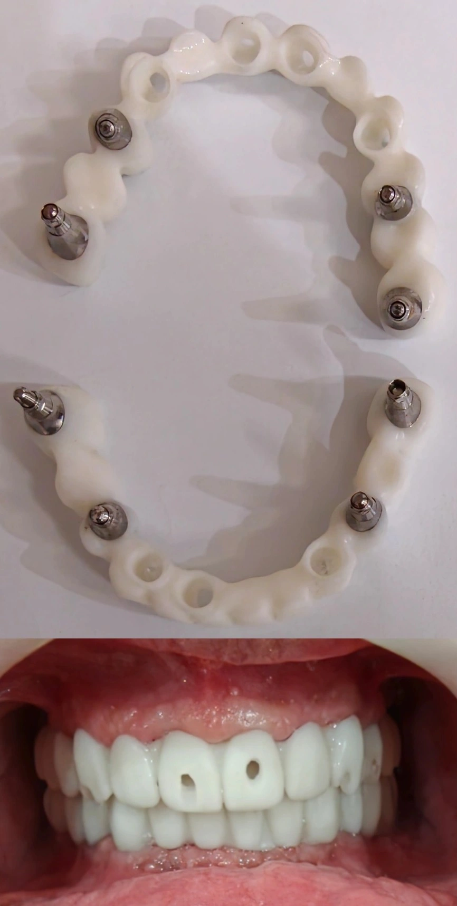

نسخه استخراجشده؛ ترجمه یا تأیید علمی انجام نشده است. وضعیت: captured
برای بازسازی تمامفک با ایمپلنت اسکن گرفته شده است. ثبت رابطه و VD همیشه درصدی احتمال خطا دارد؛ پس لابراتوار پترن رزین میسازد و سر یونیت اکلوژن و VD چک میشود. کل فلسفهی این مرحله همین است: خطای احتمالی را قبل از ورود به مراحل گران پیدا کنیم. اما پترن رزین باید روی چیزی بنشیند؛ کدام اباتمنتها تا این مرحله ساخته شوند؟

ارزیابی VD به یک نشست تکرارپذیر نیاز دارد، نه به قطعهای که خودش لق است.
یعنی همان ناحیهای که بیشترین احتمال تغییر را دارد، کمترین قابلیت اصلاح را هم دارد.
لابراتوار برای ایمپلنتهای خلفی اباتمنت اصلی میسازد و نشست، گیر و ثبات پترن رزین از همینها میآید؛ قدام بدون اباتمنت میماند و اباتمنتهای قدامی بعد از تأیید نهایی VD و رابطه ساخته میشوند. در این کیس پترن سر یونیت کاملاً استیبل نشست؛ اکلوژن و فرم دندانها مشکلی نداشت، اما VD کمی نیاز به افزایش داشت. چون اباتمنتهای قدامی هنوز ساخته نشده بودند، این ایراد فقط یک ثبت جدید هزینه داشت.
در بازسازی کامل فک، فرض قطعی بودن ثبت اولیه فرض گرانقیمتی است.